Basın kiti
Tutsak · Roni Studio
Künye
- Geliştirici
- Roni Studio (tek kişilik bağımsız stüdyo, Türkiye)
- Tür
- Co-op korku
- Oyuncu
- 1–4 kişi, online co-op
- Platform
- PC (Steam)
- Çıkış
- Aralık 2026
- Demo
- Steam'de yayında
- Dil
- 14 dil
- Steam
- Tutsak'ın Steam sayfası
- İletişim
- roni12studios@gmail.com
Oyun hakkında
Tutsak, Lethal Company ve R.E.P.O. gibi oyunlardan ilham alan 1–4 kişilik bir co-op korku oyunu. Oyuncular arkadaşlarıyla terk edilmiş yerlerde anahtar arıyor, yaratık onları yakalamadan kaçmaya çalışıyor. Yakalanan hücreye atılıyor, onu kurtarmak da arkadaşlarına kalıyor.
Her yaratığın kendine göre bir avlanma şekli var ve arkadaşlara ihanet etmenin bir sürü yolu bulunuyor. Bir de oyuncuları taklit eden skinwalker'lar var.
Öne çıkanlar
- 1–4 kişilik online co-op
- Her yaratığın kendine göre bir avlanma şekli var
- Arkadaşlarına ihanet etmenin bir sürü yolu
- Oyuncuları taklit eden skinwalker'lar
- Yakın mesafe sesli sohbet
- 14 dil desteği
Roni Studio hakkında
Roni Studio, Türkiye'den tek kişilik bir bağımsız stüdyo. Tutsak'ı baştan sona tek başına Roni geliştiriyor.
Ekran görüntüleri

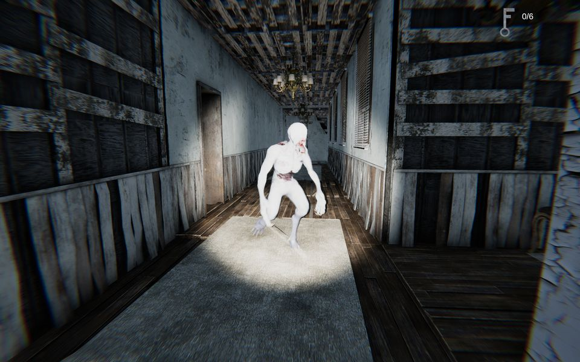

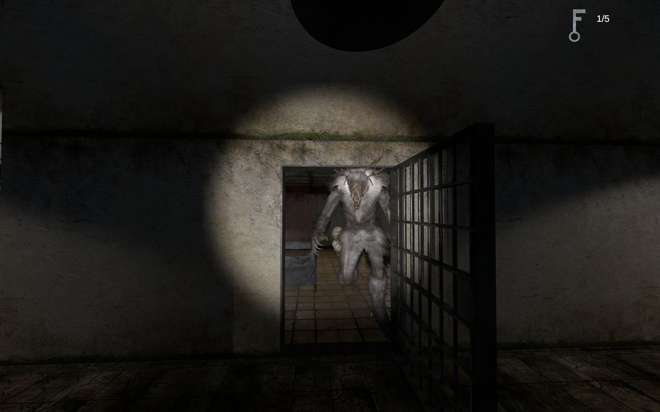

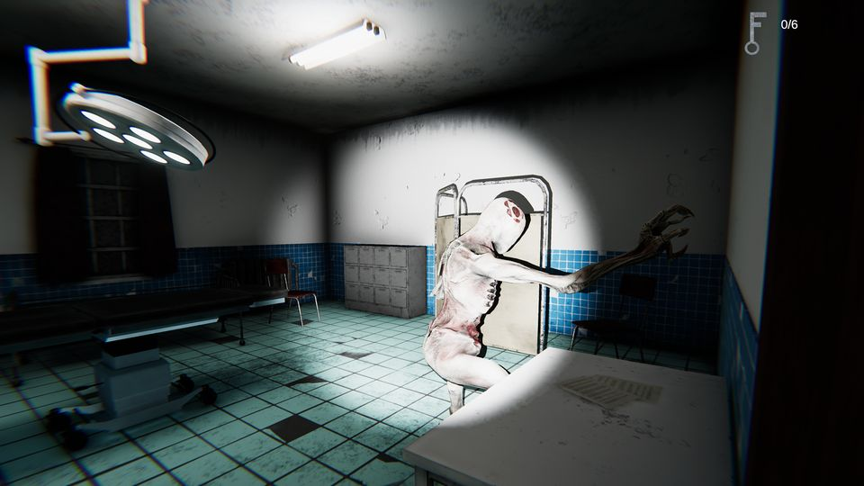

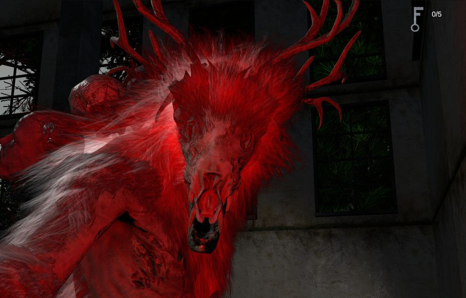

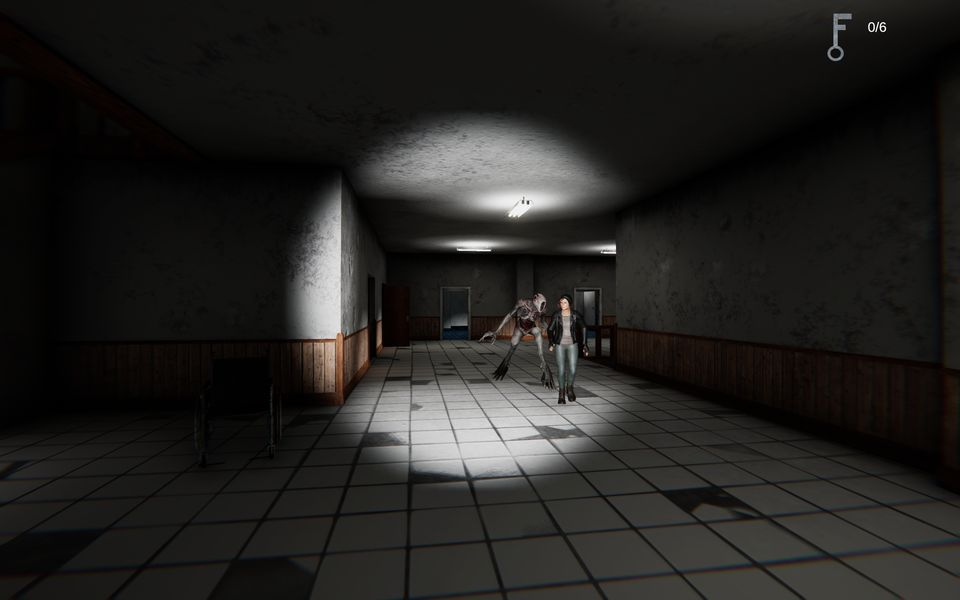

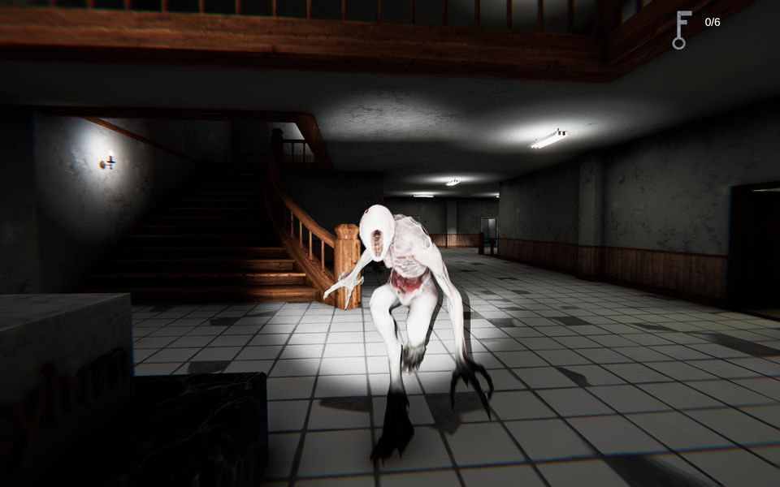

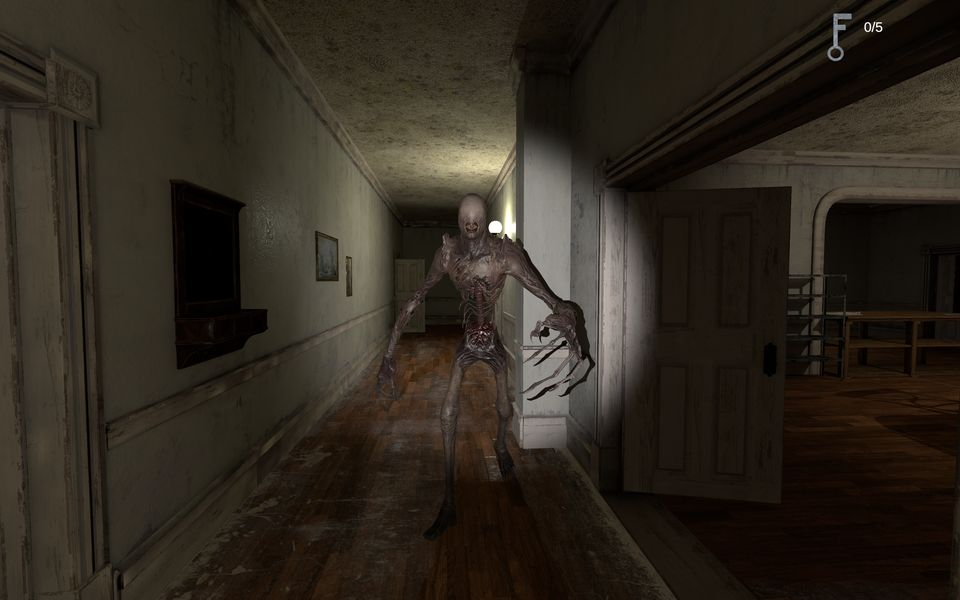

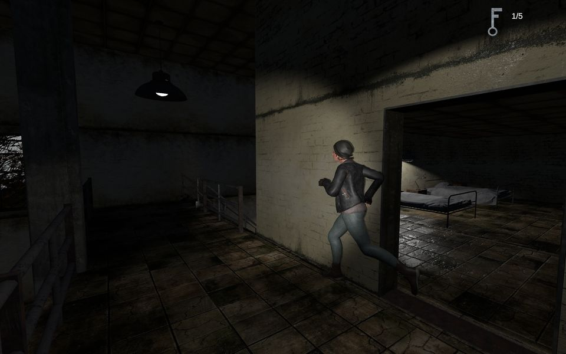

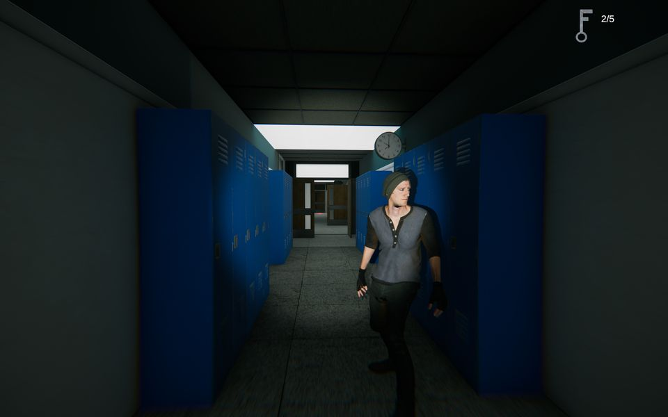

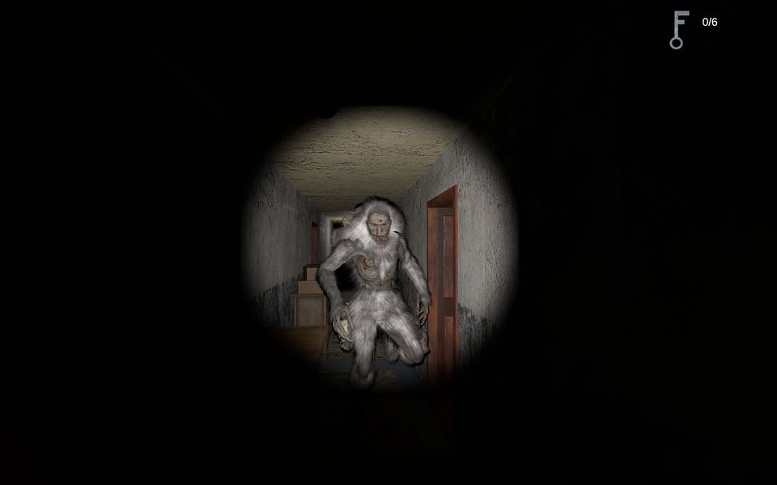

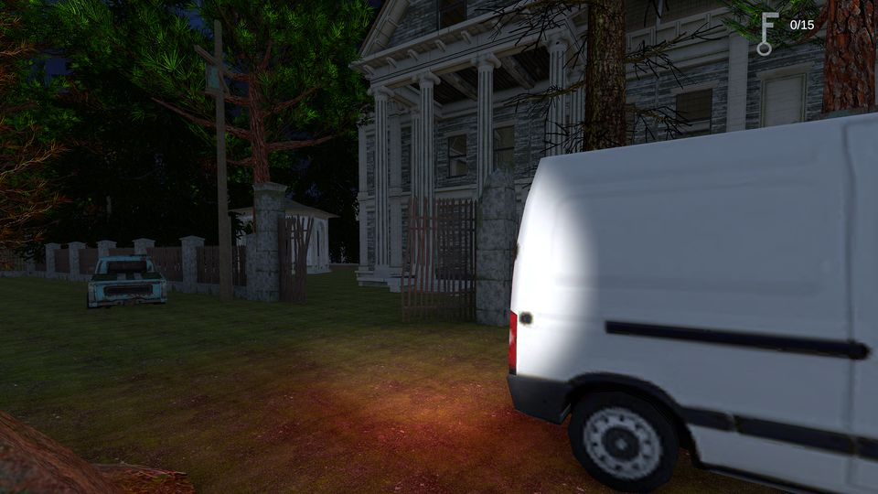

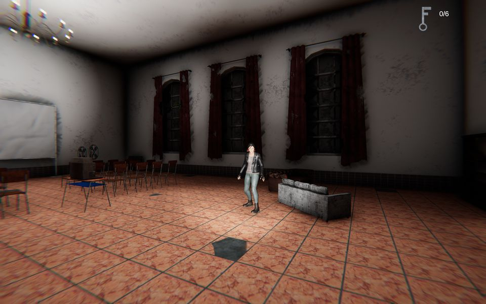
Tam boy JPG için ekran görüntüsüne tıkla.


Ana görseller

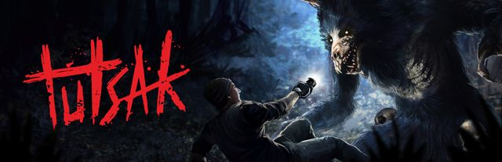
Geniş, logolu (3840×1240)
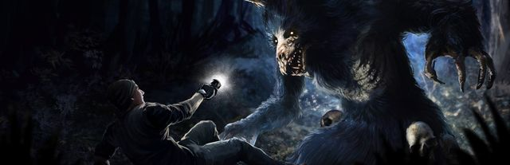
Geniş, logosuz (3840×1240)
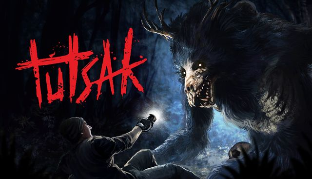
Standart, logolu (1232×706)
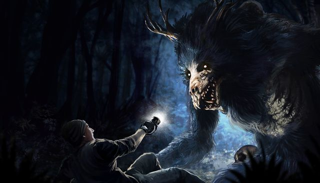
Standart, logosuz (1232×706)
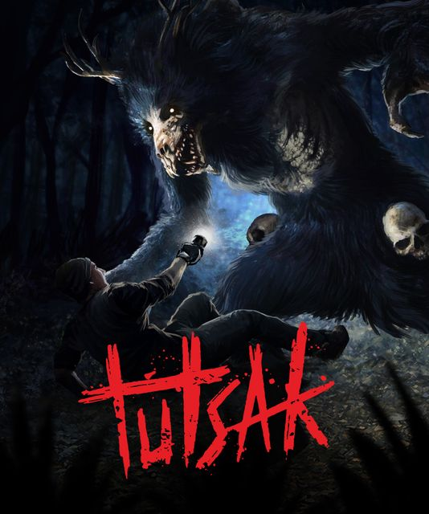
Dikey, logolu (748×896)Hepsi tek klasörde, tam çözünürlükte: Google Drive